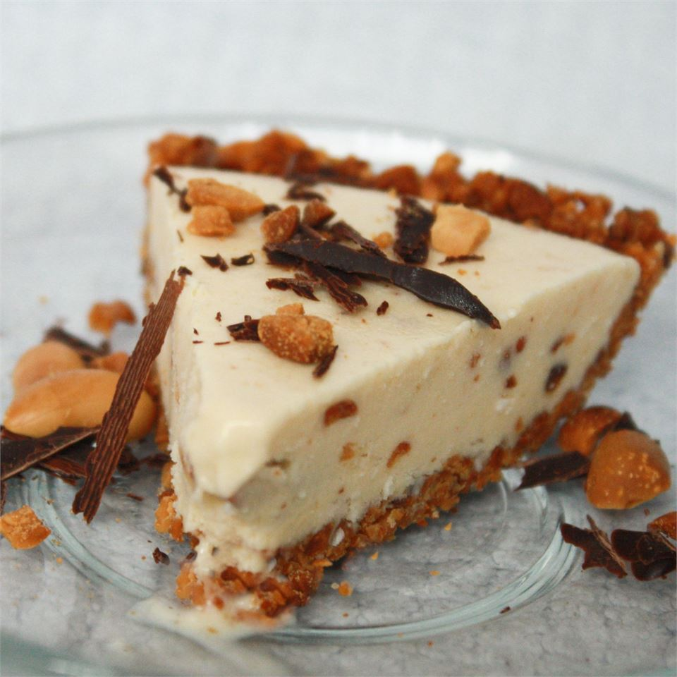

Peanutty Ice Cream Pie
Go back
A great party pie! Top with M&Ms, Sprinkles, toasted
coconut, or chocolate shavings before serving.

Ingredients:
- 1 1/3 cups finely chopped peanuts
- 3 tablespoons margarine, melted
- 2 tablespoons white sugar
- 1/4 cup peanut butter
- 1/3 cup light corn syrup
- 1/4 cup flaked coconut
- 3 tablespoons chopped peanuts
- 1 quart vanilla ice cream, softened
- 1/4 cup mini candy-coated chocolate pieces (Optional)
Steps:
-
Combine the peanuts, butter and sugar; press onto
the bottom and up the sides of a greased
9-inch pie plate. Cover and refrigerate for 15 minutes.
-
In a large bowl, combine peanut butter and corn
syrup. Add coconut and peanuts. Stir in ice cream
just until combined. Spoon into crust.
-
Cover and freeze overnight or until firm. Just before serving,
sprinkle with mini candy-coated chocolate pieces, if desired.